![Slide: Softmax Temperature. Temperature parameter controls the amount of stochasticity in sampling. A new distribution is computed from the softmax output by reweighting. Code: def sample_next(predictions, temperature=1.0): predictions = np.asarray(predictions).astype("float64"); predictions = np.log(predictions) / temperature; exp_preds = np.exp(predictions); predictions = exp_preds / np.sum(exp_preds); probas = np.random.multinomial(1, predictions, 1); return np.argmax(probas). Example predictions [0.2, 0.5, 0.1, 0.2] with temperature 0.01 and 100; bar charts for temperature 0.01, 0.2, 0.4, 0.6, 0.8, 1.0](../assets/slides/dl11-p07-softmax-temperature.png)
Lecture11 (deep_learning_part4_2.pdf, 46 หน้า) · 2603520 Deep Learning
Lesson 10 ใช้ RNN กับงาน sequence-to-vector (จำแนกรีวิว) เป็นหลัก. บทนี้ใช้ RNN ชนิดที่เหลือ แล้วชี้ว่าทำไมต้องเปลี่ยนเป็น Transformer. หัวข้อตาม agenda ของสไลด์:
<SOS>/[start] = token เริ่มประโยค; <EOS>/[end] = token จบประโยคSoftmax (Lesson 1) แปลงคะแนนเป็นความน่าจะเป็น: \(\text{softmax}(z)_j = e^{z_j} / \sum_k e^{z_k}\). คะแนน [2, 0, 0] ให้ \(e^2 = 7.389\), \(e^0 = 1\), \(e^0 = 1\) ⇒ \([7.389, 1, 1] / 9.389 = [0.787, 0.107, 0.107]\).
Dot product (Lesson 2) ของสอง vector วัดว่าชี้ไปทางเดียวกันแค่ไหน: \([1, 0, 1] \cdot [1, 1, 1] = 2\), \([1, 0, 1] \cdot [0, 1, 0] = 0\). ค่ายิ่งมากยิ่งคล้ายกัน. สองแนวคิดนี้คือแกนของ attention ทั้งบท.
Lecture แบ่งเวลาเป็น 0.5 ชั่วโมงสำหรับ Text Generation, 1 ชั่วโมงสำหรับ Machine Translation และ 1.5 ชั่วโมงสำหรับ Attention กับ Transformer. ส่วนที่สามใช้เวลามากที่สุด และเป็นพื้นฐานของ Lesson 12 ทั้งบท.
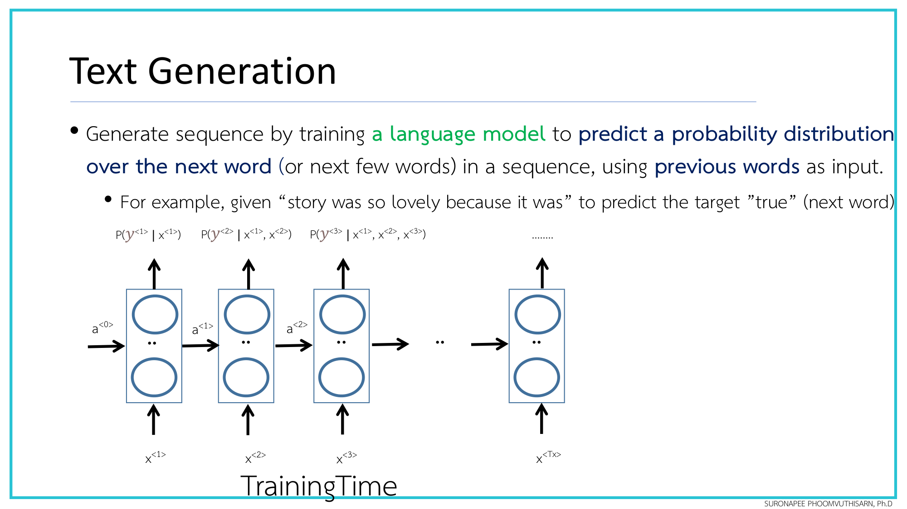
สร้างลำดับข้อความด้วยการเทรน a language model ให้ predict a probability distribution over the next word (หรือหลายคำถัดไป) ในลำดับ โดยใช้ previous words เป็น input. ตัวอย่างในสไลด์: ให้ "story was so lovely because it was" แล้วทำนาย target "true".
ตอน training ทุก time step มี target: output ที่ step \(t\) คือ \(P(y^{\langle t \rangle} \mid x^{\langle 1 \rangle}, \ldots, x^{\langle t \rangle})\) และ target \(y^{\langle t \rangle}\) คือคำที่ \(t + 1\) ของประโยค. ประโยคเดียวจึงให้โจทย์หลายข้อพร้อมกัน.
ไม่ต้องมี label แยก: target คือ input ที่เลื่อนไป 1 ตำแหน่ง. นี่คือสิ่งที่โค้ดหน้า 8 ทำด้วย x = vectorized_sequences[:, :-1] และ y = vectorized_sequences[:, 1:].
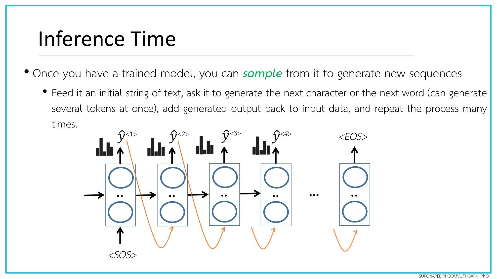
เมื่อเทรนเสร็จ โมเดลใช้ sample ลำดับใหม่ได้: ป้อนข้อความตั้งต้น ให้สร้างตัวอักษรหรือคำถัดไป (หรือหลาย token ทีเดียว) เติมผลที่ได้กลับเข้า input แล้วทำซ้ำหลายรอบ. ในแผนภาพ แต่ละ step ให้ histogram ของความน่าจะเป็น; คำที่สุ่มได้ (\(\hat{y}^{\langle 1 \rangle}\)) ถูกป้อนเป็น input ของ step ถัดไป (เส้นโค้งสีส้ม) จนได้ <EOS>. นี่คือ RNN ชนิด vector-to-sequence ของ Lesson 10 §4.
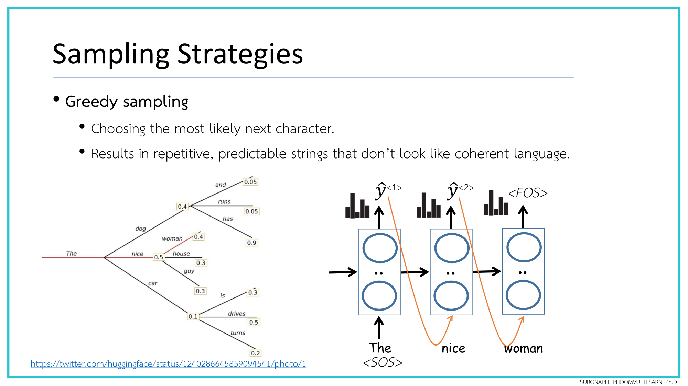
Greedy sampling: เลือกตัวที่น่าจะเป็นที่สุดเสมอ ผลคือข้อความซ้ำๆ เดาได้ และไม่เหมือนภาษาที่ต่อเนื่องจริง. ต้นไม้ในสไลด์มาจาก Hugging Face:
"The dog has" (0.36) น่าจะเป็นกว่า "The nice woman" (0.20) แต่ greedy ไม่เห็นเพราะเลือกที่ step แรกแล้ว. ปัญหาเดียวกันนี้คือเหตุผลของ beam search ใน §6.
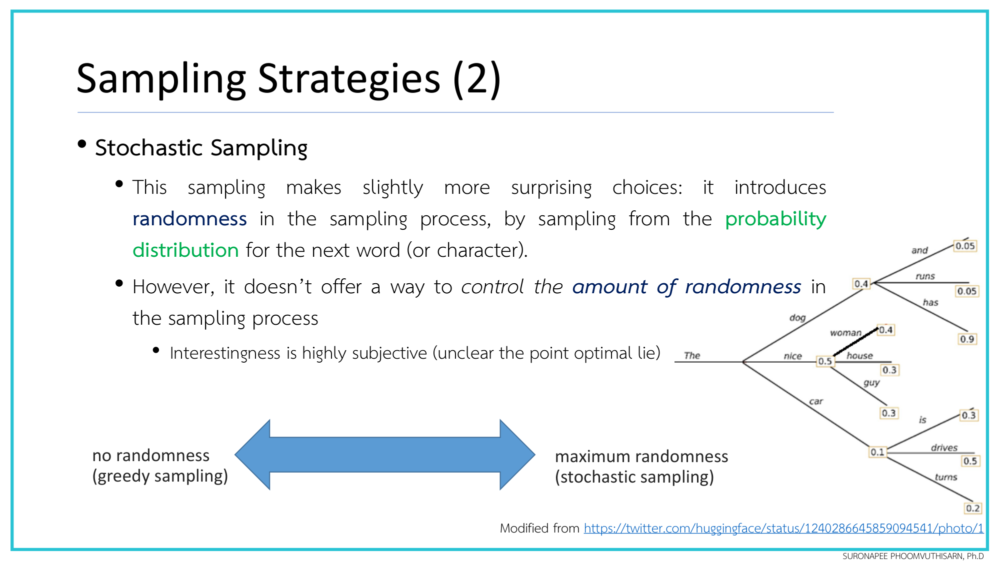
Stochastic Sampling เลือกแปลกใจขึ้นเล็กน้อย: เพิ่ม randomness ในการสุ่ม โดยสุ่มตาม probability distribution ของคำถัดไป. หลัง "The" จะได้ "nice" ด้วยโอกาส 50%, "dog" 40%, "car" 10%. ข้อจำกัด: ไม่มีวิธีควบคุม amount of randomness และ "ความน่าสนใจ" เป็นเรื่องอัตวิสัย ไม่รู้ว่าจุดที่ดีที่สุดอยู่ตรงไหน. สองวิธีนี้คือปลายสองข้างของเส้น: no randomness (greedy) ถึง maximum randomness (stochastic).
Temperature parameter ควบคุมระดับความสุ่ม. จากความน่าจะเป็นเดิม \(p\) (output ของ softmax) คำนวณการกระจายใหม่ดังนี้:
$$p_j^{(T)} = \frac{\exp(\log p_j / T)}{\sum_k \exp(\log p_k / T)} = \frac{p_j^{1/T}}{\sum_k p_k^{1/T}}$$ยกกำลัง 1/T แล้ว normalize ใหม่: T < 1 ทำให้ตัวที่สูงยิ่งสูง, T > 1 ทำให้ทุกตัวใกล้เท่ากัน
def sample_next(predictions, temperature=1.0):
predictions = np.asarray(predictions).astype("float64")
predictions = np.log(predictions) / temperature
print(predictions)
exp_preds = np.exp(predictions)
predictions = exp_preds / np.sum(exp_preds)
print(predictions)
probas = np.random.multinomial(1, predictions, 1)
print(f"Temperature:{temperature} probas:{probas}")
return np.argmax(probas)| โค้ด | ทำอะไร |
|---|---|
| np.log(predictions) / temperature | แปลงความน่าจะเป็นเป็น log แล้วหารด้วย T (เทียบเท่าการยกกำลัง 1/T) |
| exp_preds = np.exp(predictions) | แปลงกลับจาก log |
| exp_preds / np.sum(exp_preds) | normalize ให้รวมเป็น 1 อีกครั้ง |
| np.random.multinomial(1, predictions, 1) | สุ่ม 1 ครั้งตามการกระจายใหม่ คืน one-hot เช่น [[0 1 0 0]] |
| np.argmax(probas) | index ของ token ที่สุ่มได้ |
หลัง exp และ normalize: \([1.6 \times 10^{-40},\ 1.0,\ 1.3 \times 10^{-70},\ 1.6 \times 10^{-40}]\) ⇒ สุ่มได้ index 1 เสมอ (เท่ากับ greedy)
ผลที่พิมพ์ในสไลด์ตรงกันทั้งสองกรณี: T = 0.01 ให้ probas:[[0 1 0 0]], T = 100 ให้การกระจายเกือบเท่ากัน. กราฟแท่งในสไลด์แสดงลำดับนี้: T = 0.01 มีแท่งเดียว, T = 1.0 มีหลายแท่ง. Low temperature = more deterministic, high temperature = more random.
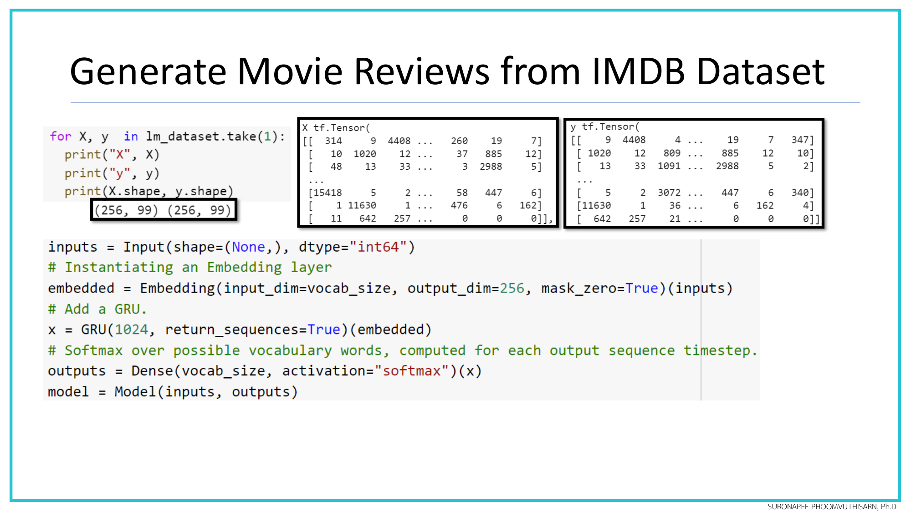
ตัวอย่างสร้างรีวิวภาพยนตร์จาก IMDB. ข้อมูลแต่ละ batch: X และ y มี shape (256, 99) เท่ากัน และในตารางที่พิมพ์ แถวแรกของ y (9, 4408, 4, …) คือแถวแรกของ X (314, 9, 4408, …) เลื่อนไป 1 ตำแหน่ง.
for X, y in lm_dataset.take(1):
print("X", X)
print("y", y)
print(X.shape, y.shape)
inputs = Input(shape=(None,), dtype="int64")
# Instantiating an Embedding layer
embedded = Embedding(input_dim=vocab_size, output_dim=256, mask_zero=True)(inputs)
# Add a GRU.
x = GRU(1024, return_sequences=True)(embedded)
# Softmax over possible vocabulary words, computed for each output sequence timestep.
outputs = Dense(vocab_size, activation="softmax")(x)
model = Model(inputs, outputs)| โค้ด | ทำอะไร |
|---|---|
| lm_dataset | dataset ของคู่ (X, y) ที่สร้างด้วย x = vectorized_sequences[:, :-1], y = vectorized_sequences[:, 1:] จากข้อความยาว 100 token ⇒ 99 token ต่อคู่ |
| Embedding(input_dim=vocab_size, output_dim=256, mask_zero=True) | vocab 20,000 คำ แปลงเป็น vector 256 มิติ และ mask padding (index 0) |
| GRU(1024, return_sequences=True) | ต้องคืน output ทุก time step เพราะทุก step มี target (sequence-to-sequence) |
| Dense(vocab_size, activation="softmax") | ความน่าจะเป็นของคำถัดไปทั้ง 20,000 คำ ต่อ time step |
| Model(inputs, outputs) | Functional API (Lesson 9 §1). คอมไพล์ด้วย loss="sparse_categorical_crossentropy" เพราะ target เป็น index |
ตรงกับ Total params: 7,848,224 ใน notebook ของผู้สอน (สไลด์เขียน GRU(1024); notebook ที่รันใช้ GRU(128)). Output layer ใหญ่เพราะต้องให้คะแนนทุกคำใน vocabulary ทุก time step ซึ่งเป็นปัญหาที่หน้า 17 พูดถึง.
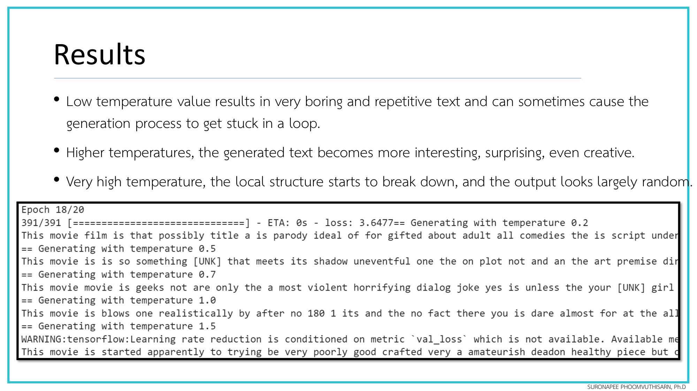
| Temperature | ผลตามสไลด์ | ตัวอย่างใน log (epoch 18/20) |
|---|---|---|
| ต่ำ (0.2) | very boring and repetitive และอาจติด loop | "This movie film is that possibly title a is parody …" |
| กลาง (0.5–1.0) | more interesting, surprising, even creative | "This movie is is so something [UNK] that meets its shadow uneventful …" |
| สูงมาก (1.5) | local structure starts to break down, output largely random | "This movie is started apparently to trying be very poorly good crafted …" |
สังเกต [UNK] ในข้อความที่สร้าง: คำที่ไม่อยู่ใน 20,000 คำแรกถูกแทนด้วย OOV token ตอนเทรน โมเดลจึงเรียนที่จะสร้าง [UNK] ด้วย.
np.log(predictions) / temperature → np.exp → normalize → np.random.multinomial(1, predictions, 1) → np.argmax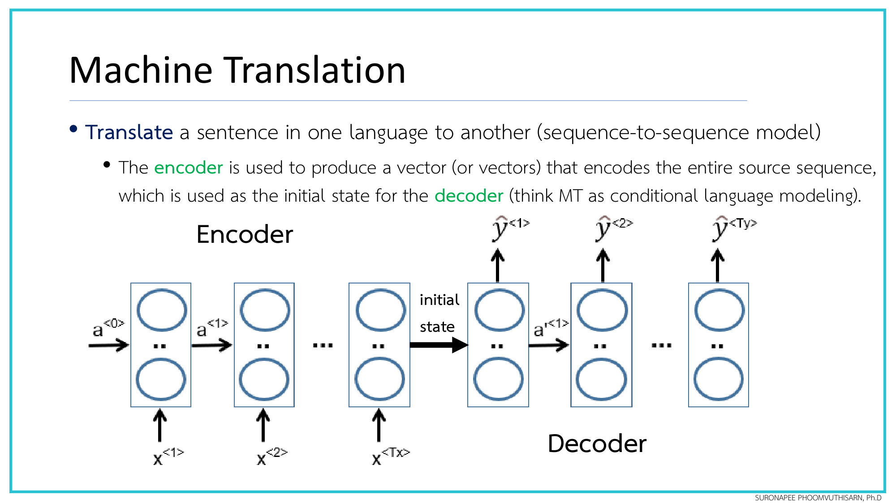
Machine translation คือการ • Translate ประโยคจากภาษาหนึ่งไปอีกภาษาหนึ่ง (sequence-to-sequence model). encoder สร้าง vector ที่เข้ารหัสประโยคต้นทางทั้งประโยค แล้ว vector นั้นเป็น initial state ของ decoder. สไลด์ให้มองว่า MT คือ conditional language modeling: decoder เป็น language model แบบ §1 ที่มีเงื่อนไขเพิ่มคือประโยคต้นทาง \(x\).
$$P(y^{\langle t \rangle} \mid x,\ y^{\langle 1 \rangle}, \ldots, y^{\langle t-1 \rangle})$$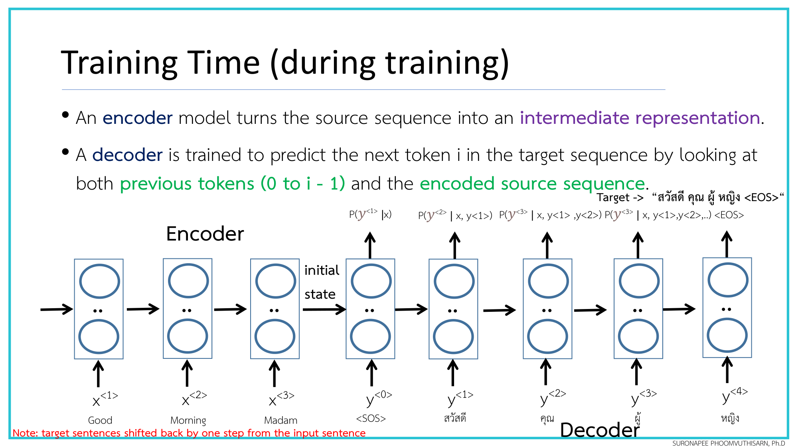
Note: target sentences shifted back by one step from the input sentence. ตอนเทรน input ของ decoder คือคำที่ถูกต้องจากประโยคปลายทาง (ไม่ใช่คำที่โมเดลทายเอง) เรียกว่า teacher forcing.
สองลำดับยาวเท่ากัน (5 token) แต่เหลื่อมกัน 1 ตำแหน่ง. โค้ด NMT ใน §4 ทำสิ่งนี้ด้วย spa[:, :-1] (decoder input) และ spa[:, 1:] (target).
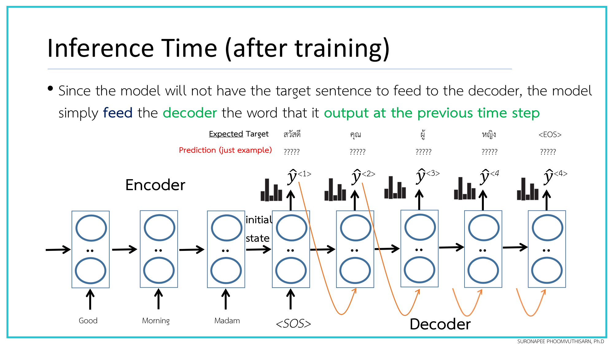
หลังเทรน ไม่มีประโยคปลายทางให้ป้อน decoder อีกแล้ว โมเดลจึง feed decoder ด้วยคำที่มันเองเป็น output at the previous time step. แถว "Prediction (just example)" ในสไลด์เป็น "?????" ทุกช่อง: เราไม่รู้ล่วงหน้าว่าโมเดลจะทายอะไร และถ้าทายผิดที่ step แรก คำผิดนั้นจะถูกป้อนต่อไปทุก step.
| Training time | Inference time | |
|---|---|---|
| input ของ decoder ที่ step \(t\) | คำจริง \(y^{\langle t-1 \rangle}\) จากประโยคปลายทาง | คำที่ทาย \(\hat{y}^{\langle t-1 \rangle}\) |
| คำนวณทุก step | พร้อมกันได้ | ทีละ step (ต้องรอผลของ step ก่อน) |
| หยุดเมื่อ | ครบความยาว target | ได้ <EOS> หรือครบความยาวสูงสุด |
![Slide: Neural Machine Translation Example. Preparing text. spa.txt lines like Go. Ve. Code: text_file = "spa-eng/spa.txt"; with open(text_file) as f: lines = f.read().split("\n")[:-1]; print(len(lines)) # 118964. text_pairs = []; for line in lines: english, spanish = line.split("\t"); spanish = "[start] " + spanish + " [end]"; text_pairs.append((english, spanish)); print(len(text_pairs)) #118964. Output pairs ('Go.', '[start] Ve. [end]')](../assets/slides/dl11-p13-nmt-preparing-text.png)
ไฟล์ spa.txt มีหนึ่งคู่ประโยคต่อบรรทัด คั่นด้วย tab เช่น Go.\tVe..
text_file = "spa-eng/spa.txt"
with open(text_file) as f:
lines = f.read().split("\n")[:-1]
print(len(lines)) # 118964
print(lines)
text_pairs = []
# Iterate over the lines in the file.
for line in lines:
# Each line contains an English phrase and its Spanish translation, tab-separated.
english,spanish = line.split("\t")
# prepend "[start]" and append "[end]" to the Spanish sentence for decoder
spanish = "[start] " + spanish + " [end]"
text_pairs.append((english, spanish))
print(len(text_pairs)) #118964| โค้ด | ทำอะไร |
|---|---|
| f.read().split("\n")[:-1] | แยกบรรทัด และตัดบรรทัดว่างตัวสุดท้าย ⇒ 118,964 บรรทัด |
| line.split("\t") | แยกประโยคอังกฤษกับสเปน |
| "[start] " + spanish + " [end]" | เติม token เริ่ม/จบให้ประโยคปลายทางเท่านั้น (decoder ต้องการ; encoder ไม่ต้อง) |
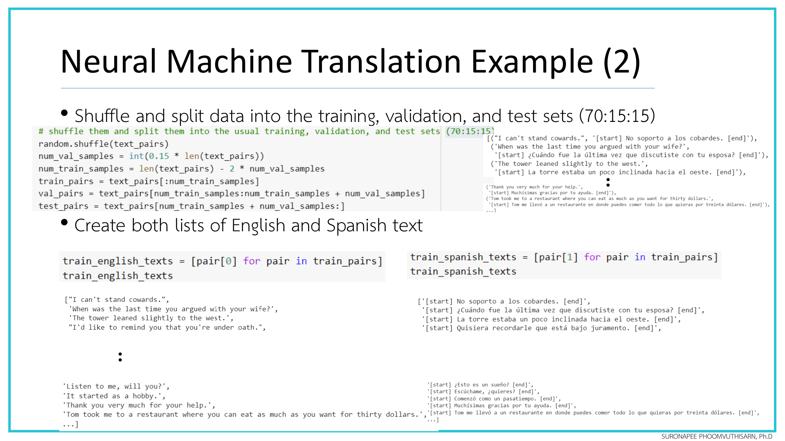
# shuffle them and split them into the usual training, validation, and test sets (70:15:15)
random.shuffle(text_pairs)
num_val_samples = int(0.15 * len(text_pairs))
num_train_samples = len(text_pairs) - 2 * num_val_samples
train_pairs = text_pairs[:num_train_samples]
val_pairs = text_pairs[num_train_samples:num_train_samples + num_val_samples]
test_pairs = text_pairs[num_train_samples + num_val_samples:]
train_english_texts = [pair[0] for pair in train_pairs]
train_spanish_texts = [pair[1] for pair in train_pairs]Train 83,276 (70.0%), validation 17,844, test 17,844. random.shuffle ต้องมาก่อนการตัด เพราะไฟล์เรียงจากประโยคสั้นไปยาว.
![Slide: Neural Machine Translation Example (3). Prepare two separate TextVectorization layers, one for English and one for Spanish. vocab_size = 15000; sequence_length = 20. source_vectorization with output_sequence_length=sequence_length; target_vectorization with output_sequence_length=sequence_length + 1 and standardize=custom_standardization. strip_chars = string.punctuation + "¿" with [ and ] removed. format_dataset returns english and spanish[:, :-1] inputs and spa[:, 1:] targets; shapes (64, 20)](../assets/slides/dl11-p15-nmt-textvectorization.png)
vocab_size = 15000
sequence_length = 20
# The English layer
source_vectorization = TextVectorization(
max_tokens=vocab_size,
output_mode="int",
output_sequence_length=sequence_length,
)
# The Spanish layer
target_vectorization = TextVectorization(
max_tokens=vocab_size,
output_mode="int",
# Generate Spanish sentences that have one extra token,
# since we'll need to offset the sentence by one step during training.
output_sequence_length=sequence_length + 1,
standardize=custom_standardization,
)
# Learn the vocabulary of each language.
source_vectorization.adapt(train_english_texts)
target_vectorization.adapt(train_spanish_texts)
strip_chars = string.punctuation + "¿"
strip_chars = strip_chars.replace("[", "")
strip_chars = strip_chars.replace("]", "")
def custom_standardization(input_string):
lowercase = tf.strings.lower(input_string)
return tf.strings.regex_replace(lowercase, f"[{re.escape(strip_chars)}]", "")
batch_size = 64
def format_dataset(eng, spa):
eng = source_vectorization(eng)
spa = target_vectorization(spa)
return ({
"english": eng,
"spanish": spa[:, :-1],
}, spa[:, 1:])| โค้ด | ทำอะไร |
|---|---|
| vocab_size = 15000, sequence_length = 20 | ใช้ 15,000 คำที่พบบ่อยที่สุดของแต่ละภาษา และจำกัดประโยคที่ 20 token |
| output_sequence_length=sequence_length + 1 | ฝั่งสเปนยาว 21 เพื่อให้ตัดได้สองแบบ ([:, :-1] และ [:, 1:]) แล้วได้ 20 ทั้งคู่ |
| strip_chars = string.punctuation + "¿" | เครื่องหมายที่จะลบ: !"#$%&'()*+,-./:;<=>?@\^_`{|}~¿ (ภาษาสเปนมี ¿ เพิ่ม และเอา [ ] ออกจากรายการเพื่อเก็บ token [start], [end] ไว้) |
| custom_standardization | ทำเป็นตัวพิมพ์เล็กแล้วลบเครื่องหมายด้วย regular expression; ใช้กับฝั่งสเปนเท่านั้น |
| .adapt(...) | สร้าง vocabulary แยกต่อภาษาจาก training set |
| "spanish": spa[:, :-1] และ spa[:, 1:] | decoder input และ target ที่เหลื่อมกัน 1 ตำแหน่ง (§3). Batch: inputs['english'].shape = inputs['spanish'].shape = targets.shape = (64, 20) |
ผลในสไลด์: target_vectorization('[start] Eso no ocurrirá nunca. [end]') ได้ tensor shape (21,) = [2, 40, 7, 4158, 80, 3, 0, …, 0]. Index 2 = [start], 3 = [end] (0 = padding, 1 = [UNK]), และ "nunca." ถูกลบจุดก่อนแปลง.
![Slide: Encoder-Decoder Models. GRU-based encoder: embed_dim = 256; latent_dim = 1024; source = Input(shape=(None,), dtype="int64", name="english"); x = Embedding(vocab_size, embed_dim, mask_zero=True)(source); encoded_source = Bidirectional(GRU(latent_dim), merge_mode="sum")(x). Decoder: past_target = Input(..., name="spanish"); embedding; decoder_gru = GRU(latent_dim, return_sequences=True); x = decoder_gru(x, initial_state=encoded_source); Dropout(0.5); Dense(vocab_size, softmax); seq2seq_rnn = Model([source, past_target], target_next_step). Summary total params 34,869,912. Example: You speak French, right? -> [start] habla francés [end]](../assets/slides/dl11-p16-encoder-decoder-models.png)
# GRU-based encoders. Note that GRU only has a single= state vector, whereas LSTM has multiple
embed_dim = 256
latent_dim = 1024
# The English source sentence goes here. Specifying the name of the input enables us to fit() the model with a dict of inputs.
source = Input(shape=(None,), dtype="int64", name="english")
x = Embedding(vocab_size, embed_dim, mask_zero=True)(source)
# Our encoded source sentence is the last output of a bidirectional GRU.
encoded_source = Bidirectional(GRU(latent_dim), merge_mode="sum")(x)
# GRU-based decoder and the end-to-end model
past_target = Input(shape=(None,), dtype="int64", name="spanish") # The Spanish target sentence goes here
x = Embedding(vocab_size, embed_dim, mask_zero=True)(past_target)
decoder_gru = GRU(latent_dim, return_sequences=True)
# The encoded source sentence serves as the initial state of the decoder GRU.
x = decoder_gru(x, initial_state=encoded_source)
x = Dropout(0.5)(x)
# Predicts the next token
target_next_step = Dense(vocab_size, activation="softmax")(x)
# End-to-end model: maps the source sentence and the target sentence to the target sentence one step in the future
seq2seq_rnn = Model([source, past_target], target_next_step)
seq2seq_rnn.summary()| โค้ด | ทำอะไร |
|---|---|
| Input(..., name="english") / Input(..., name="spanish") | ตั้งชื่อ input ให้ตรงกับ key ของ dict ใน format_dataset จึง fit ด้วย dict ได้ |
| Bidirectional(GRU(latent_dim), merge_mode="sum") | encoder อ่านสองทิศ แล้วบวก state ของสองทิศ (ไม่ต่อ) จึงได้ vector 1,024 ค่า ซึ่งเท่ากับขนาด state ของ decoder |
| GRU(latent_dim, return_sequences=True) | decoder คืน output ทุก step เพราะทุก step ต้องทำนายคำถัดไป |
| decoder_gru(x, initial_state=encoded_source) | จุดเชื่อม encoder กับ decoder: state เริ่มต้นของ decoder คือประโยคต้นทางที่เข้ารหัสแล้ว |
| Dense(vocab_size, activation="softmax") | ความน่าจะเป็นของ 15,000 คำต่อ step |
| Model([source, past_target], target_next_step) | โมเดลสอง input หนึ่ง output (Lesson 9 §2) |
ตรงกับ Total params ในสไลด์ (3,840,000 / 7,876,608 / 3,938,304 / 15,375,000 ปรากฏในคอลัมน์ Param #). Output layer มี 44% ของ parameter. ผลแปลตัวอย่าง: "You speak French, right?" → [start] habla francés [end] (val_accuracy ราว 0.645 ที่ epoch 15).
encoded_source = Bidirectional(GRU(512), merge_mode="sum")(x) และ decoder_gru = GRU(512, return_sequences=True) เหตุใดจึงใช้ merge_mode="sum" แทน "concat"?Embedding(10000, 128) ตามด้วย Dense(10000, activation="softmax") ที่รับ input จาก GRU 256 unit สอง layer นี้มี parameter รวมกันกี่ตัว?![Slide: Note. When the output vocabulary is large, outputting a probability for every possible word would be terribly slow; computing the softmax over a large vector (15,000 vocab) is very computationally expensive. One solution: look only at the logits for the correct words and a random sample of incorrect words and approximate the loss (sampled softmax). At inference we must use the normal softmax. Give SOS first and feed outputs as inputs until EOS. The 0 tokens from padding should not contribute to the loss](../assets/slides/dl11-p17-note-sampled-softmax.png)
mask_zero=True (Lesson 10 §13)ตัวอย่าง: ถ้า sampled softmax ใช้คำผิด 500 คำ จะคำนวณ \(1 + 500 = 501\) logit แทน 15,000 คือลดลงราว 30 เท่าต่อ step ตอนเทรน.
![Slide: Machine Translation Evaluation Metrics. BLEU score compares a predicted sentence against one or more target sentences, output 0 to 1. Example target The guard arrived late because it was raining; predicted The guard arrived late because of the rain. Precision n-gram = correct predicted n-grams / total predicted n-grams for 1- to 4-gram. Geometric average precision = p1^(1/4) p2^(1/4) p3^(1/4) p4^(1/4). Brevity penalty = 1 if c > r, e^(1 - r/c) if c <= r. BLEU(N) = brevity penalty times geometric average precision. ROUGE link](../assets/slides/dl11-p18-bleu-score.png)
BLEU score เปรียบเทียบประโยคที่ทำนายกับประโยคเป้าหมายหนึ่งหรือหลายประโยค ได้คะแนนระหว่าง 0 (ไม่ตรงเลย) ถึง 1 (ตรงทั้งหมด).
$$\begin{gathered}\text{Precision}_{n} = \frac{\text{จำนวน n-gram ที่ทำนายถูก}}{\text{จำนวน n-gram ที่ทำนายทั้งหมด}} \\[0.35em] \text{GAP}(N) = \prod_{n=1}^{N} p_n^{w_n} = (p_1 p_2 p_3 p_4)^{1/4}\end{gathered}$$ $$\text{BP} = \begin{cases} 1 & c > r \\ e^{(1 - r/c)} & c \le r \end{cases} \qquad \text{BLEU}(N) = \text{BP} \times \text{GAP}(N)$$c = ความยาวประโยคที่ทำนาย, r = ความยาวประโยคเป้าหมาย; BP ลงโทษคำแปลที่สั้นเกิน
BLEU ≈ 0.52. Precision ลดลงเมื่อ n โต เพราะ n-gram ยาวต้องตรงต่อเนื่องหลายคำ. ตัวอย่างหัวสไลด์ "the ball is blue" เทียบ "the ball has a blue color" ให้ 1-gram precision = 3/4 (the, ball, blue). หมายเหตุ: สไลด์เขียน "Blue score"; ชื่อที่ถูกคือ BLEU (Bilingual Evaluation Understudy). ROUGE เป็นอีก metric ที่สไลด์ให้ลิงก์ไว้ (นิยมใช้กับ summarization).
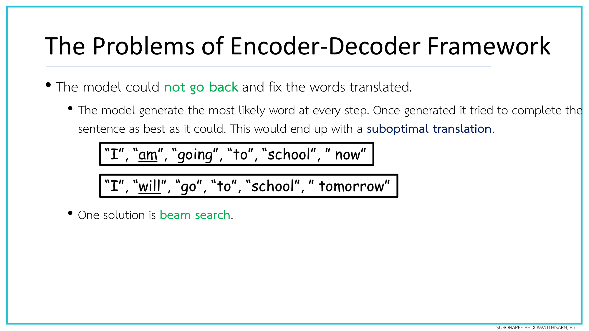
โมเดล not go back ไปแก้คำที่แปลไปแล้วไม่ได้. มันสร้างคำที่น่าจะเป็นที่สุดทุก step แล้วพยายามเติมประโยคให้ดีที่สุดเท่าที่ทำได้ ผลคือ suboptimal translation. ตัวอย่างในสไลด์: ถ้า step ที่ 2 เลือก "am" ประโยคจะถูกบังคับเป็น "I am going to school now"; ถ้าบริบทจริงเป็นอนาคต คำที่ควรได้คือ "will" แต่แก้ย้อนไม่ได้แล้ว. ทางแก้หนึ่งคือ beam search.
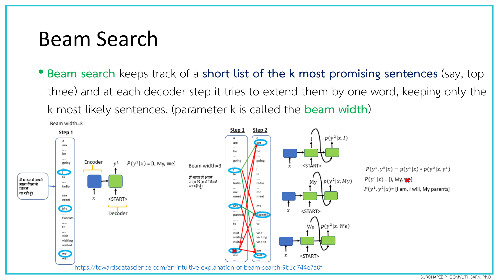
• Beam search เก็บ short list of the k most promising sentences (เช่น 3 ประโยค) และทุก step ของ decoder ขยายแต่ละประโยคด้วยคำอีก 1 คำ แล้วเก็บเฉพาะ k ประโยคที่น่าจะเป็นที่สุด. k เรียกว่า beam width. ความน่าจะเป็นของประโยคคือผลคูณตาม chain rule:
$$P(y^1, y^2 \mid x) = P(y^1 \mid x) \times P(y^2 \mid x, y^1)$$ในรูป (ประโยคต้นทางภาษาฮินดี): step 1 เก็บ \(P(y^1 \mid x)\) = [I, My, We]. Step 2 ขยายแต่ละตัวด้วยคำที่เป็นไปได้ทั้งหมด แล้วเหลือ [I am, I will, My parents]: "We" หลุดเพราะทุกประโยคที่ขึ้นต้นด้วย We มีผลคูณต่ำกว่าสามอันดับแรก.
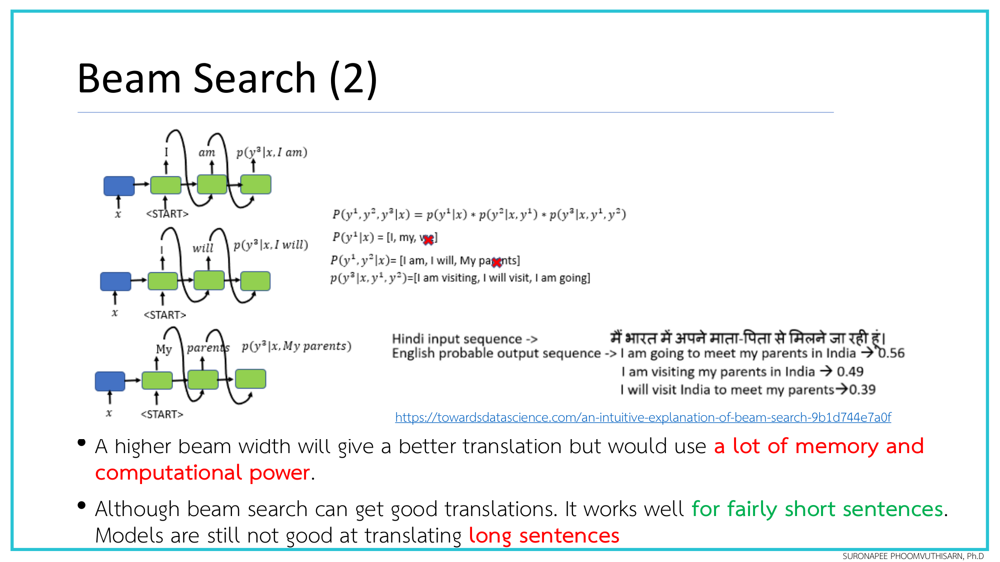
ต้นทุนต่อ step โตเป็นเส้นตรงตาม k. ผลลัพธ์ในสไลด์มีสามประโยค: "I am going to meet my parents in India" (0.56), "I am visiting my parents in India" (0.49), "I will visit India to meet my parents" (0.39); เลือก 0.56.
ข้อสรุปของหน้า 21: beam width สูงให้คำแปลดีขึ้นแต่ใช้ a lot of memory and computational power; beam search ทำงานได้ดี for fairly short sentences แต่โมเดลยังแปล long sentences ได้ไม่ดี.
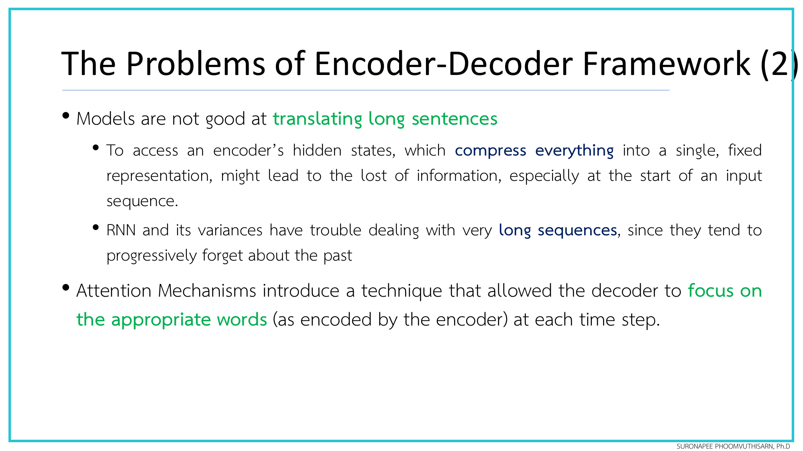
ตัวเลขของคอขวด: ในโมเดล §4 ประโยคต้นทาง 20 token ถูกบีบเป็น vector เดียว 1,024 ค่า. ประโยค 5 คำหรือ 20 คำได้ vector ขนาดเท่ากัน ประโยคยาวจึงมีพื้นที่ต่อคำน้อยลง.
![Slide: Attention Mechanisms (Bahdanau, 2014) allow the decoder to focus on the appropriate words at each time step, so the path from an input word to its translation becomes shorter. Instead of sending only a final hidden state, the encoder sends all of its outputs to the decoder. At each step the decoder memory cell computes a weighted sum of all encoder outputs. The decoder also receives the hidden state and target word from the previous step. Diagram: encoder outputs for I drink milk, alignment model computes e(3,0), e(3,1), e(3,2), softmax gives alpha(3,0), alpha(3,1), alpha(3,2)](../assets/slides/dl11-p23-attention-mechanisms.png)
Attention Mechanisms (Bahdanau, 2014) ให้ decoder focus on the appropriate words (ตามที่ encoder เข้ารหัส) ในแต่ละ time step เส้นทางจากคำต้นทางไปยังคำแปลจึงสั้นลง:
ในแผนภาพ alignment model รับ state \(h_{(2)}\) ของ decoder กับ encoder output แต่ละตัว ได้คะแนน \(e_{(3,0)}, e_{(3,1)}, e_{(3,2)}\) แล้วผ่าน softmax เป็น \(\alpha_{(3,0)}, \alpha_{(3,1)}, \alpha_{(3,2)}\) ซึ่งใช้ถ่วงผลรวมก่อนทำนายคำที่ 3 ("lait").
![Slide: Attention Weights Computation. Weights are generated by a small neural network called an alignment model (attention layer), trained jointly with the rest of the encoder-decoder. It outputs a score for each encoder output measuring how well it aligns with the decoder's current state; scores go through softmax so weights for a decoder step add up to 1. Example: encoder I drink milk with vectors [88, 99, 13...], [43, 56, 80...], [23, 54, 31...]; decoder Je bois du laid with vectors [89, 49, 13...], [43, 54, 80...], [33, 26, 60...], [23, 55, 33...]](../assets/slides/dl11-p24-attention-weights-computation.png)
• Weights มาจาก neural network ขนาดเล็กที่เรียกว่า alignment model (หรือ attention layer) ซึ่ง trained jointly กับส่วนที่เหลือของ encoder–decoder. Attention layer ให้คะแนนแต่ละ encoder output ว่า align กับ state ปัจจุบันของ decoder (hidden state และ target word) ดีเพียงใด แล้วผ่าน softmax ⇒ น้ำหนักของ decoder step หนึ่งรวมกันเป็น 1.
ตัวอย่างในสไลด์: encoder อ่าน "I", "drink", "milk" ได้ vector [88, 99, 13, …], [43, 56, 80, …], [23, 54, 31……]. ขณะ decoder จะเขียนคำที่สี่ ("laid") state ของ decoder คือ [23, 55, 33, ……] ซึ่งใกล้กับ vector ของ "milk" มากที่สุด attention จึงให้น้ำหนักสูงกับ "milk". ตาราง slot ในสไลด์ ({"subject": "Je", "verb": "bois", "adj": "du", "object": ___}) อธิบายสิ่งเดียวกัน: ตำแหน่ง object ต้องการข้อมูลจากคำ object ของต้นทาง.
น้ำหนักรวม \(0.107 + 0.107 + 0.787 = 1\). Context vector ใกล้ \(h_3\) (milk) มากที่สุด และ decoder step นี้ใช้ vector นี้ร่วมกับ state ของตัวเองเพื่อทำนายคำ. ทุก decoder step คำนวณน้ำหนักชุดใหม่.
![Slide: Visualize the Attention Weights for an English to French translation model, each pixel a weight. Correctly aligns zone and Area, which are ordered differently. Although attention enabled much better translations, there was still a major shortcoming with recurrent encoder and decoder: computations are inherently sequential and cannot be parallelized. Heatmap: The agreement on the European Economic Area was signed in August 1992 versus L'accord sur la zone économique européenne a été signé en août 1992](../assets/slides/dl11-p25-visualize-attention-weights.png)
visualize the attention weights ของโมเดลแปลอังกฤษ → ฝรั่งเศส: แต่ละ pixel คือ weight หนึ่งตัว (ขาว = สูง). ส่วนใหญ่ weight อยู่บนเส้นทแยง (แปลตามลำดับ) แต่ช่วงกลางเส้นทแยงกลับทิศ: "European Economic Area" ↔ "zone économique européenne" เรียงกลับกัน และ attention align "zone" กับ "Area" ได้ถูกแม้ตำแหน่งต่างกัน.
แม้ attention ให้คำแปลดีขึ้นมาก ยังมี major shortcoming จากการใช้ recurrent model เป็น encoder และ decoder: การคำนวณเป็น sequential โดยธรรมชาติ และ parallelized ข้ามลำดับ input ไม่ได้. step ที่ 20 ต้องรอ step ที่ 19 เสร็จก่อน ซึ่งเป็นเหตุผลของ Transformer.
Vaswani (Google Brain) และคณะเผยแพร่ "Attention Is All You Need" (2017) เสนอสถาปัตยกรรมใหม่สำหรับ sequence modeling ที่ทำได้ดีกว่า RNN ในงานแปลภาษา ทั้งด้านคุณภาพการแปลและต้นทุนการเทรน. Timeline ในสไลด์: Transformer (2017) → ULMFiT, GPT, BERT (2018) → GPT-2, RoBERTa, XLM-R, DistilBERT (2019) → GPT-3, T5, DeBERTa (2020) → GPT-Neo, GPT-J (2021).
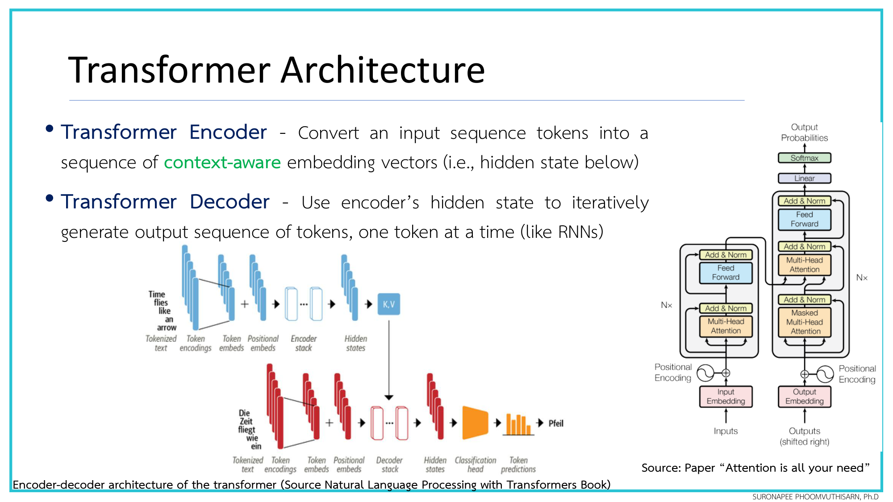
ตัวอย่างในรูป: "Time flies like an arrow" ผ่าน encoder stack ได้ hidden states (K, V) แล้ว decoder ที่อ่าน "Die Zeit fliegt wie ein" จึงทำนาย token ถัดไป "Pfeil". แม้ encoder ประมวลผลทั้งประโยคพร้อมกัน decoder ตอน inference ยังสร้างทีละ token.
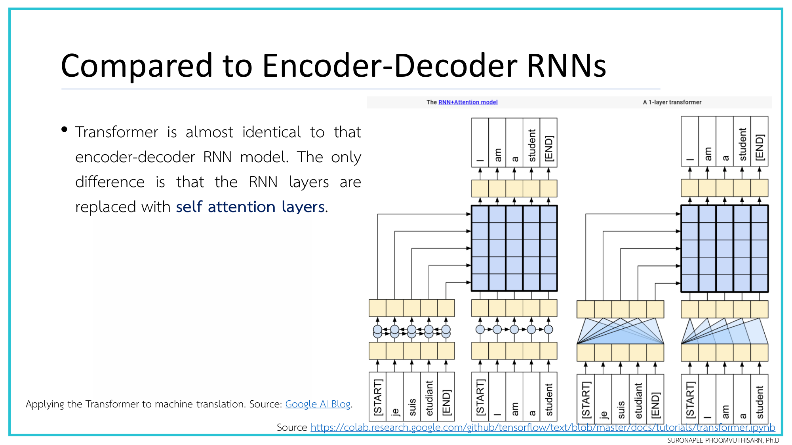
Transformer เกือบเหมือน encoder–decoder RNN ทุกส่วน. ความต่างเดียวคือ RNN layer ถูกแทนด้วย self attention layers. ในรูป: ฝั่ง RNN แต่ละตำแหน่งต่อกับตำแหน่งข้างเคียงเป็นลูกโซ่; ฝั่ง Transformer ทุกตำแหน่งต่อตรงกับทุกตำแหน่ง (เส้นโยงหลายเส้นในชั้นล่าง).
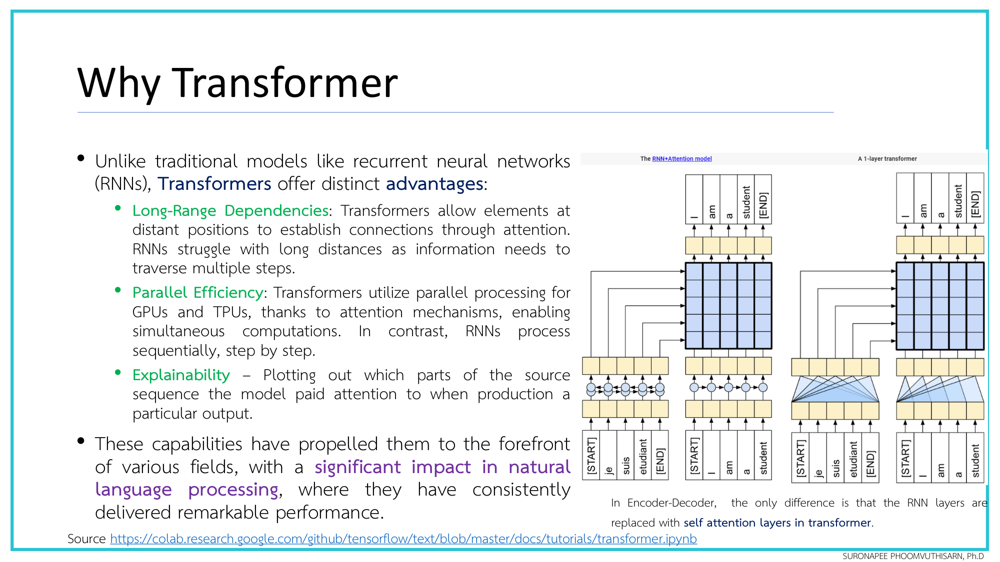
ต่างจาก RNN, Transformers มี advantages สามข้อ:
| ข้อดี | ความหมายตามสไลด์ | เป็นตัวเลข (ประโยค \(n\) token) |
|---|---|---|
| • Long-Range Dependencies | ตำแหน่งที่อยู่ไกลกันเชื่อมกันได้ตรงผ่าน attention; RNN ต้องส่งข้อมูลผ่านหลาย step | ระยะระหว่างคำแรกกับคำสุดท้าย: RNN \(n - 1\) step; Transformer 1 step |
| • Parallel Efficiency | ใช้การประมวลผลขนานบน GPU/TPU; RNN ประมวลผลทีละ step | RNN: \(n\) step ต่อกัน; Transformer: ทุกตำแหน่งพร้อมกันใน layer เดียว |
| • Explainability | plot ได้ว่าโมเดล attend ส่วนไหนของต้นทางขณะสร้าง output แต่ละตัว | attention weight เป็น matrix \(n \times n\) ที่วาดเป็น heatmap ได้ |
ความสามารถเหล่านี้ทำให้ Transformer มี significant impact in natural language processing. หมายเหตุใต้รูป: ใน encoder–decoder ความต่างเดียวคือ RNN layer ถูกแทนด้วย self attention layers in transformer.
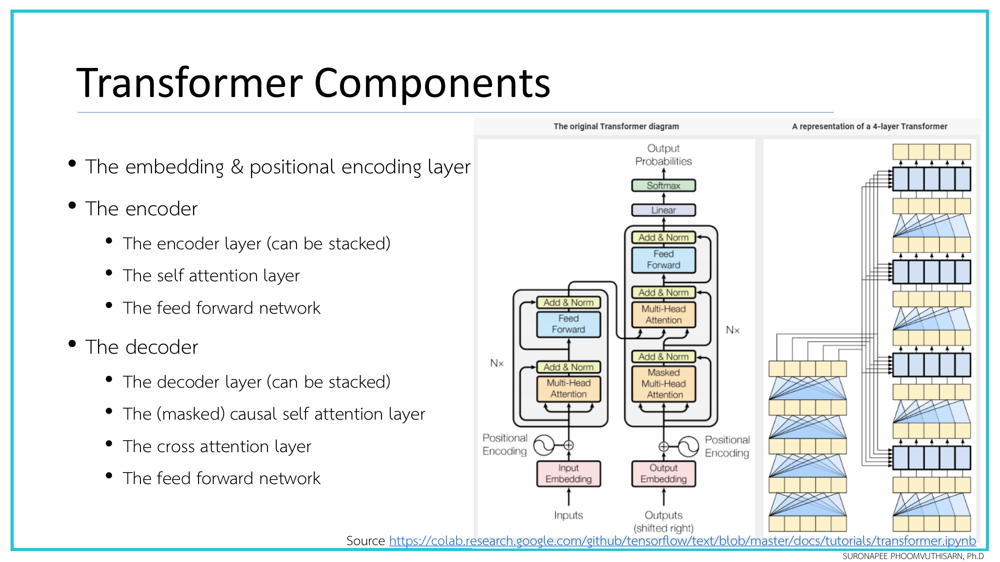
| ส่วน | ชิ้นย่อย | หัวข้อ |
|---|---|---|
| The embedding & positional encoding layer | token embedding + position embedding | §9 |
| The encoder | encoder layer (ซ้อนได้) = self attention layer + feed forward network | §10 |
| The decoder | decoder layer (ซ้อนได้) = (masked) causal self attention layer + cross attention layer + feed forward network | §12 |
รูปขวา "A representation of a 4-layer Transformer" คือ encoder layer และ decoder layer อย่างละ 4 ชั้นซ้อนกัน (Nx = 4); output ของ encoder ชั้นสุดท้ายถูกส่งเข้า cross attention ของ decoder ทุกชั้น.
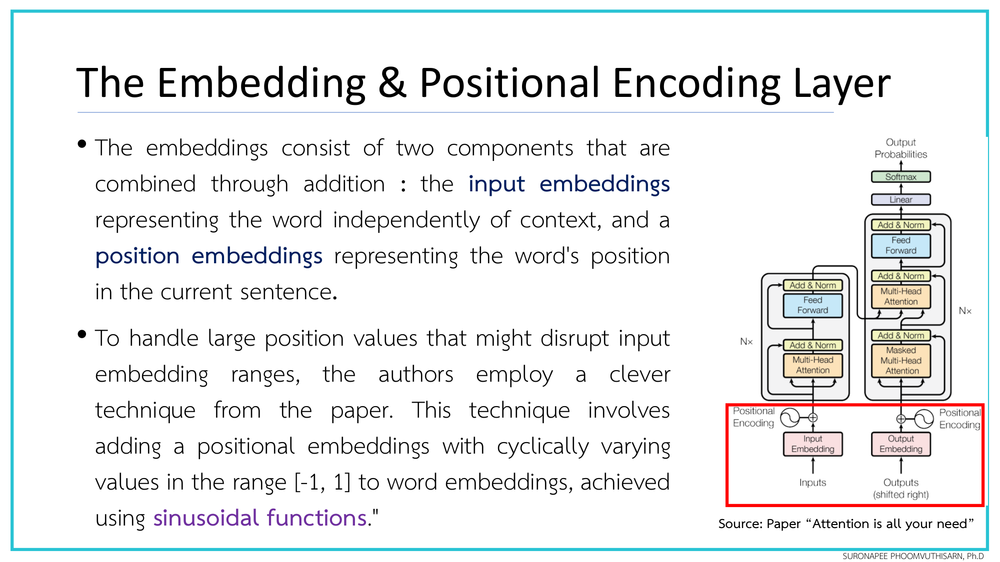
Self-attention ไม่มีลำดับในตัว: ถ้าสลับคำในประโยค ผลรวมถ่วงน้ำหนักของ §10 ก็เพียงสลับตาม. ข้อมูลตำแหน่งจึงต้องเติมเข้าไปใน input. Embedding ของ Transformer มีสองส่วนที่บวกกัน:
ค่าตำแหน่งดิบ (0, 1, 2, …, 500) ใหญ่เกินช่วงของ embedding และจะกลบความหมายของคำ. ผู้เขียนจึงบวก positional embedding ที่มีค่าวนเป็นรอบในช่วง [−1, 1] ซึ่งสร้างด้วย sinusoidal functions.
![Slide: Positional Embeddings (2). Fixed sinusoidal positional embeddings provide sequential information without learning additional parameters, using sine and cosine of different frequencies. Each position is a vector of sine and cosine values; the shift between tokens should be small; frequencies vary across dimensions. Even dimensions PE(pos, 2i) = sin(pos / 10000^(2i/d_model)); odd dimensions PE(pos, 2i+1) = cos(pos / 10000^(2i/d_model)); pos is the position, i the dimension index, d_model the embedding size (e.g. 512 or 768)](../assets/slides/dl11-p32-sinusoidal-formula.png)
Fixed (sinusoidal) positional embeddings ให้ข้อมูลลำดับ without learning additional parameters: ใช้ sine และ cosine หลายความถี่.
$$\begin{gathered}\text{PE}_{(pos,\,2i)} = \sin\!\left(\frac{pos}{10000^{2i/d_{model}}}\right) \\[0.35em] \text{PE}_{(pos,\,2i+1)} = \cos\!\left(\frac{pos}{10000^{2i/d_{model}}}\right)\end{gathered}$$มิติคู่ใช้ sin มิติคี่ใช้ cos; มิติคู่ 2i กับมิติคี่ 2i+1 ใช้ความถี่เดียวกัน; มิติยิ่งสูงความถี่ยิ่งต่ำ
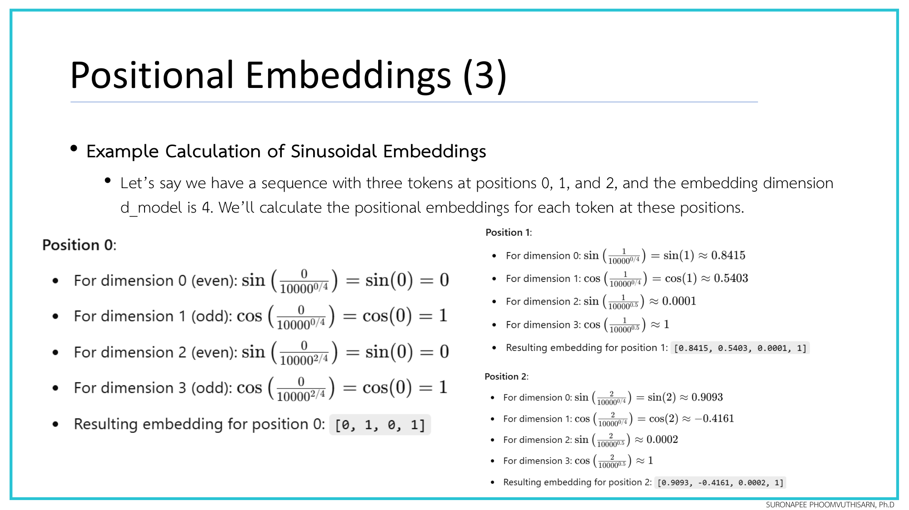
หมายเหตุสำคัญ: สไลด์เขียนตัวหารของมิติ 2 ถูกเป็น \(10000^{0.5}\) แต่พิมพ์ผลเป็น ≈ 0.0001 และ ≈ 0.0002. ค่าที่ถูกคือ \(\sin(1/100) = 0.0100\) และ \(\sin(2/100) = 0.0200\) (ค่า 0.0001 ตรงกับตัวหาร 10,000 ไม่ใช่ 100). ในข้อสอบที่ใช้ตัวเลขจากสไลด์ ให้จำ vector ที่สไลด์พิมพ์ [0.8415, 0.5403, 0.0001, 1] ไว้ด้วย. มิติ 0–1 (ความถี่สูง) เปลี่ยนเร็วระหว่างตำแหน่ง; มิติ 2–3 (ความถี่ต่ำ) เปลี่ยนช้ามาก.
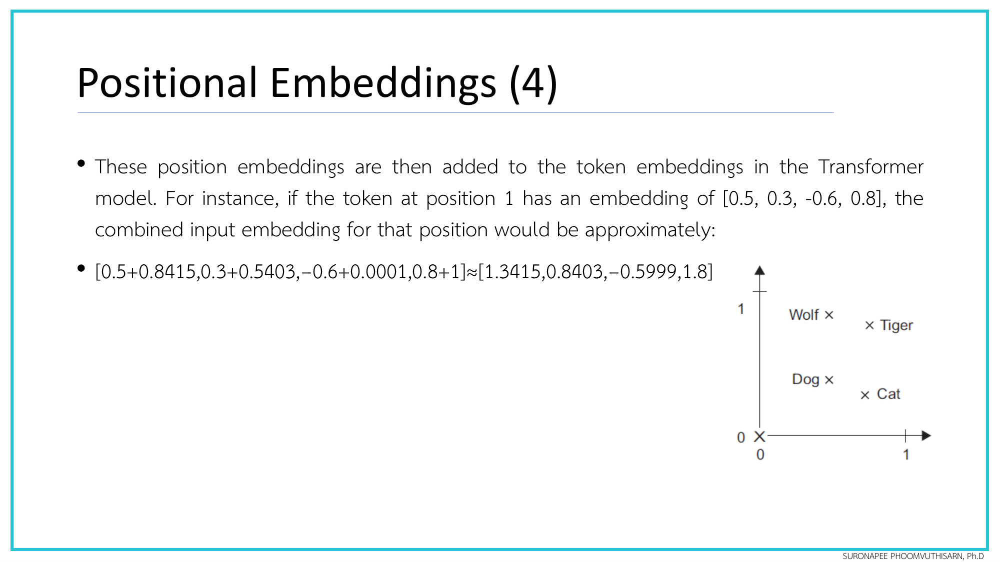
ขนาดของ vector คงเดิม (4 มิติ) เพราะเป็นการบวก ไม่ใช่การต่อ. คำเดียวกันที่ตำแหน่งต่างกันจะได้ input embedding ต่างกัน. รูปเวกเตอร์ Wolf/Tiger/Dog/Cat (จาก Lesson 10) แสดงว่า token embedding เข้ารหัสความหมาย ส่วน positional embedding เลื่อนแต่ละคำเล็กน้อยตามตำแหน่ง.
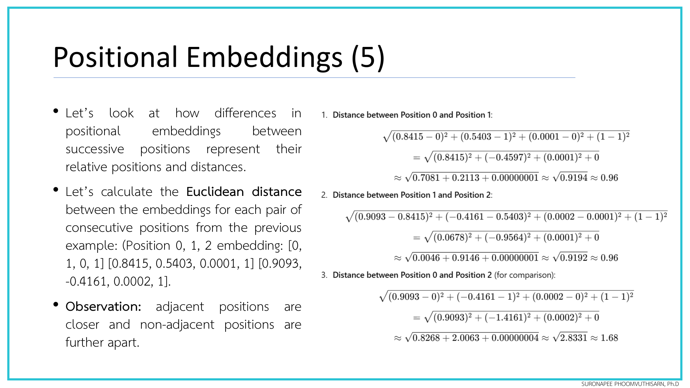
Observation: ตำแหน่งที่ติดกันอยู่ใกล้กัน (0.96) และตำแหน่งที่ห่างกันอยู่ไกลกว่า (1.68). ระยะของคู่ที่ติดกันเท่ากันทุกคู่ แปลว่าระยะขึ้นกับระยะห่างสัมพัทธ์ไม่ใช่ตำแหน่งสัมบูรณ์. ใช้ค่าที่ถูกของมิติ 2 แล้วระยะเปลี่ยนน้อยกว่า 0.001 ทุกคู่ ข้อสรุปจึงไม่เปลี่ยน.
![Slide: Positional Embeddings (6). Code: def positional_encoding(length, depth): depth = depth/2; positions = np.arange(length)[:, np.newaxis]; depths = np.arange(depth)[np.newaxis, :]/depth; angle_rates = 1 / (10000**depths); angle_rads = positions * angle_rates; pos_encoding[:, 0::2] = np.sin(angle_rads[:, 0::2]); pos_encoding[:, 1::2] = np.cos(angle_rads[:, 1::2]); return tf.convert_to_tensor(pos_encoding). pos_encoding = positional_encoding(length=2048, depth=512*2); shape (2048, 512); pcolormesh plot Depth vs Position](../assets/slides/dl11-p36-positional-encoding-code.png)
def positional_encoding(length, depth):
depth = depth/2
positions = np.arange(length)[:, np.newaxis] # (seq, 1)
depths = np.arange(depth)[np.newaxis, :]/depth # (1, depth)
angle_rates = 1 / (10000**depths) # (1, depth)
angle_rads = positions * angle_rates # (pos, depth)
# Compute sine and cosine values directly
pos_encoding = np.zeros(angle_rads.shape, dtype=np.float32)
pos_encoding[:, 0::2] = np.sin(angle_rads[:, 0::2]) # Apply sine to even indices
pos_encoding[:, 1::2] = np.cos(angle_rads[:, 1::2]) # Apply cosine to odd indices
return tf.convert_to_tensor(pos_encoding)
pos_encoding = positional_encoding(length=2048, depth=512*2)
# Check the shape.
print(pos_encoding.shape)
# Plot the dimensions.
plt.pcolormesh(pos_encoding.numpy().T, cmap='RdBu')
plt.ylabel('Depth')
plt.xlabel('Position')
plt.colorbar()
plt.show()| โค้ด | ทำอะไร |
|---|---|
| depth = depth/2 | เรียก depth=512*2 = 1,024 แล้วหารสอง ⇒ ตาราง 512 มิติ (ผล (2048, 512)) |
| positions = np.arange(length)[:, np.newaxis] | ตำแหน่ง 0 ถึง 2,047 เป็นคอลัมน์ shape (2048, 1) |
| depths = np.arange(depth)[np.newaxis, :]/depth | สัดส่วน \(k/512\) ของแต่ละมิติ shape (1, 512) |
| angle_rates = 1 / (10000**depths) | ความถี่ของแต่ละมิติ: มิติ 0 = 1, มิติท้ายๆ ≈ 1/10000 |
| angle_rads = positions * angle_rates | broadcasting ได้มุม shape (2048, 512) |
| pos_encoding[:, 0::2] = np.sin(...) / [:, 1::2] = np.cos(...) | คอลัมน์คู่ใช้ sin คอลัมน์คี่ใช้ cos ตามสูตร |
| plt.pcolormesh(pos_encoding.numpy().T, cmap='RdBu') | วาดเป็นภาพ: แกนตั้ง = มิติ (Depth), แกนนอน = ตำแหน่ง |
ในภาพ มิติล่าง (ความถี่สูง) สลับแดง-น้ำเงินถี่มาก; มิติบน (ความถี่ต่ำ) แทบเป็นแถบสีเดียวตลอด 2,048 ตำแหน่ง. แต่ละตำแหน่ง (แต่ละคอลัมน์) จึงมีรูปแบบสีไม่ซ้ำกัน. หมายเหตุ: โค้ดนี้คำนวณมุมของทุก index แล้วเลือกคอลัมน์คู่/คี่ จึงใช้ความถี่ \(10000^{-k/512}\) ต่อ index \(k\) ซึ่งต่างจากสูตรของ paper เล็กน้อย (paper ให้คู่ \(2i, 2i+1\) ใช้ความถี่เดียวกัน) แต่หลักการเดียวกัน.
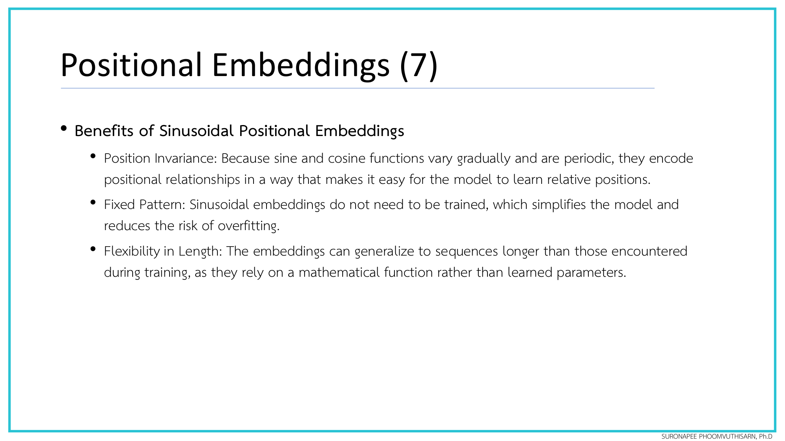
เทียบกับ PositionalEmbedding ใน notebook ของผู้สอนซึ่งใช้ Embedding(input_dim=sequence_length, output_dim=output_dim) แบบเรียนได้: มี parameter \(20 \times 256 = 5{,}120\) ตัว และรับประโยคยาวเกิน 20 ไม่ได้ ซึ่งเป็นข้อเสียที่ข้อดีข้อ 2–3 ข้างบนแก้.
encoder layer แต่ละชั้นรับลำดับของ embeddings แล้วส่งผ่านสองชั้นย่อย:
หน้าที่ของ encoder stack คือ "update" input embedding ให้เป็น representation ที่เข้ารหัส contextual information ในลำดับ. output embedding ของแต่ละ encoder layer มี same size as the inputs: ประโยค 5 token ที่ \(d_{model} = 512\) เข้าเป็น (5, 512) ออกเป็น (5, 512) จึงซ้อนกี่ชั้นก็ได้.
![Slide: Self-attention. Transformer encoder uses self-attention to produce context-aware representations of each token. The self part refers to weights computed for all hidden states in the same set, e.g. all encoder outputs at a layer. By contrast attention in recurrent models computes relevance of each encoder output to the decoder state at a decoding step. Example: input the train left the station on time; scores for station: the 0.2, train 0.8, left 0.6, the 0.3, station 1.0, on 0.2, time 0.2; softmax, scaling and multiplication give weighted token vectors summed into a context-aware vector](../assets/slides/dl11-p39-self-attention.png)
Transformer encoder ใช้ self-attention สร้าง context-aware representations ของ each token ในลำดับ input. คำว่า "self" หมายความว่า weight ถูกคำนวณระหว่าง all hidden states in the same set เช่น output ทั้งหมดของ encoder ใน layer เดียวกัน. ต่างจาก attention ของ recurrent model (§7) ซึ่งคำนวณความเกี่ยวข้องของ encoder output แต่ละตัวกับ state ปัจจุบันของ decoder.
ตัวอย่างในสไลด์: ประโยค "the train left the station on time". คะแนนของแถว "station" คือ the 0.2, train 0.8, left 0.6, the 0.3, station 1.0, on 0.2, time 0.2. หลัง softmax คำว่า "train" ได้น้ำหนักสูงรองจากตัวเอง vector ใหม่ของ "station" จึงมีความหมายของ "train station" (สถานีรถไฟ) ไม่ใช่ "radio station" หรือ "police station".
![Slide: Self-attention Computation. (1) compute attention scores between the vector for station and every other word using the dot product, then scaling and softmax. (2) compute the sum of all word vectors weighted by the attention scores; the result is the new representation for station incorporating context. Pseudocode def self_attention(input_sequence) with nested loops using np.dot, scaling by np.sqrt(input_sequence.shape[1]) and softmax. Keras: num_heads = 4; embed_dim = 256; mha_layer = MultiHeadAttention(num_heads=num_heads, key_dim=embed_dim); outputs = mha_layer(inputs, inputs, inputs)](../assets/slides/dl11-p40-self-attention-computation.png)
def self_attention(input_sequence):
output = np.zeros(shape=input_sequence.shape)
# Iterate over each token in the input sequence.
for i, pivot_vector in enumerate(input_sequence):
scores = np.zeros(shape=(len(input_sequence),))
for j, vector in enumerate(input_sequence):
# Compute the dot product (attention score)
# between the token and every other token
scores[j] = np.dot(pivot_vector, vector.T)
# Scale by a normalization factor, and apply a softmax.
scores /= np.sqrt(input_sequence.shape[1])
scores = softmax(scores)
new_pivot_representation = np.zeros(shape=pivot_vector.shape)
for j, vector in enumerate(input_sequence):
# Take the sum of all tokens weighted by the attention scores.
new_pivot_representation += vector * scores[j]
output[i] = new_pivot_representation # That sum is the output.
return output
# Keras built-in layer to handle it:
num_heads = 4
embed_dim = 256
mha_layer = MultiHeadAttention(num_heads=num_heads, key_dim=embed_dim)
outputs = mha_layer(inputs, inputs, inputs)| โค้ด | ทำอะไร |
|---|---|
| for i, pivot_vector in enumerate(input_sequence) | วนทีละ token ที่จะสร้าง representation ใหม่ (pivot) |
| scores[j] = np.dot(pivot_vector, vector.T) | คะแนนของ token j = dot product กับ pivot |
| scores /= np.sqrt(input_sequence.shape[1]) | หารด้วย \(\sqrt{d}\) (d = มิติของ vector) เพื่อไม่ให้คะแนนใหญ่เกินจน softmax อิ่มตัว |
| scores = softmax(scores) | แปลงเป็นน้ำหนักที่รวมเป็น 1 |
| new_pivot_representation += vector * scores[j] | ผลรวมถ่วงน้ำหนักของทุก token |
| MultiHeadAttention(num_heads=4, key_dim=256) | layer สำเร็จรูปของ Keras (§11) |
| mha_layer(inputs, inputs, inputs) | ส่ง query, value, key เป็นลำดับเดียวกันทั้งสาม = self-attention |
\(v_1\) ใหม่ = [0.802, 0.599]: ยังคล้ายตัวเดิม [1, 0] แต่ถูกดึงเข้าหา \(v_3\) ซึ่งคล้ายกัน. ขนาด output (2 มิติ) เท่า input ตามข้อความหน้า 38.
![Slide: The Query-Key-Value Model. outputs = sum(inputs * pairwise_scores(inputs, inputs)) with C, A, B: for each token in inputs A compute relation to every token in inputs B and use scores to weight a sum of tokens from inputs C. outputs = sum(values * pairwise_scores(query, keys)). In machine translation: self attention in the encoder uses the source sequence as query, keys and values; cross attention in the decoder uses the target sequence as query and the source sequence as keys and values. Image retrieval analogy: query dogs on the beach matched against keys Beach/Tree/Boat 0.5, Beach/Dog/Tree 1.0, Dog 0.5 to rank values (images)](../assets/slides/dl11-p41-query-key-value.png)
Self-attention เขียนเป็นรูปทั่วไปได้:
outputs = sum(inputs * pairwise_scores(inputs, inputs))
# C A B
outputs = sum(values * pairwise_scores(query, keys))สำหรับแต่ละ token ใน A คำนวณความสัมพันธ์กับทุก token ใน B แล้วใช้คะแนนถ่วงผลรวมของ token จาก C
ตั้งชื่อใหม่: A = query, B = keys, C = values. อุปมาในสไลด์: ค้นรูปด้วย query "dogs on the beach" เทียบกับ keys (ป้ายกำกับของแต่ละรูป): {Beach, Tree, Boat} match 0.5, {Beach, Dog, Tree} match 1.0, {Dog} match 0.5 แล้วใช้คะแนนจัดอันดับ values (ตัวรูป).
| ใน machine translation | query | keys | values |
|---|---|---|---|
| self attention ใน encoder | source sequence | source sequence | source sequence |
| cross attention ใน decoder | target sequence | source sequence | source sequence |
ข้อความตามสไลด์: ใน self attention ของ encoder source sequence เล่นทั้งบทบาท query, keys และ values; ใน cross attention ของ decoder query คือ target sequence และ source sequence เล่นทั้ง keys และ values.
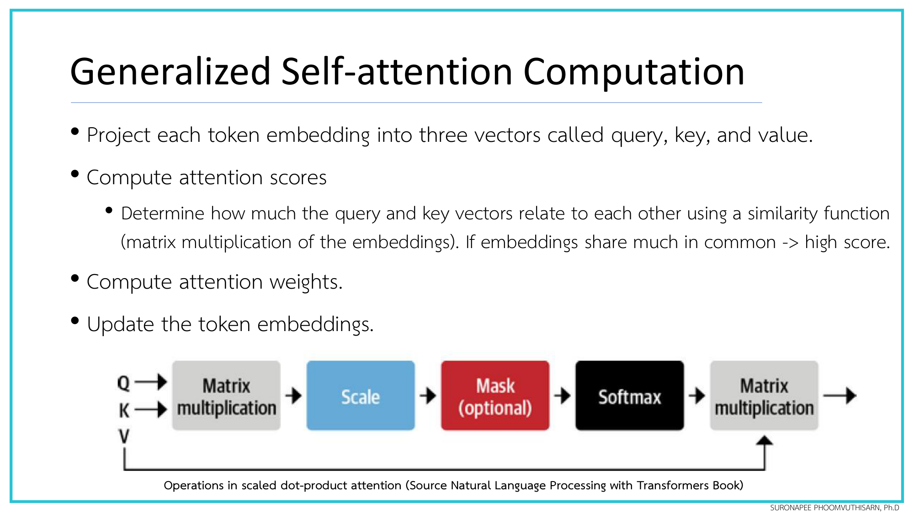
ถ้าไม่ scale คะแนน [2, 0] ให้ softmax [0.881, 0.119] ซึ่งแหลมกว่า. เมื่อ \(d_k\) ใหญ่ (เช่น 64) dot product มีค่าใหญ่ตาม การหารด้วย \(\sqrt{d_k}\) จึงกัน softmax ไม่ให้อิ่มตัวจน gradient หาย (Lesson 5). ขั้น mask (optional) ใช้ใน decoder (§12).
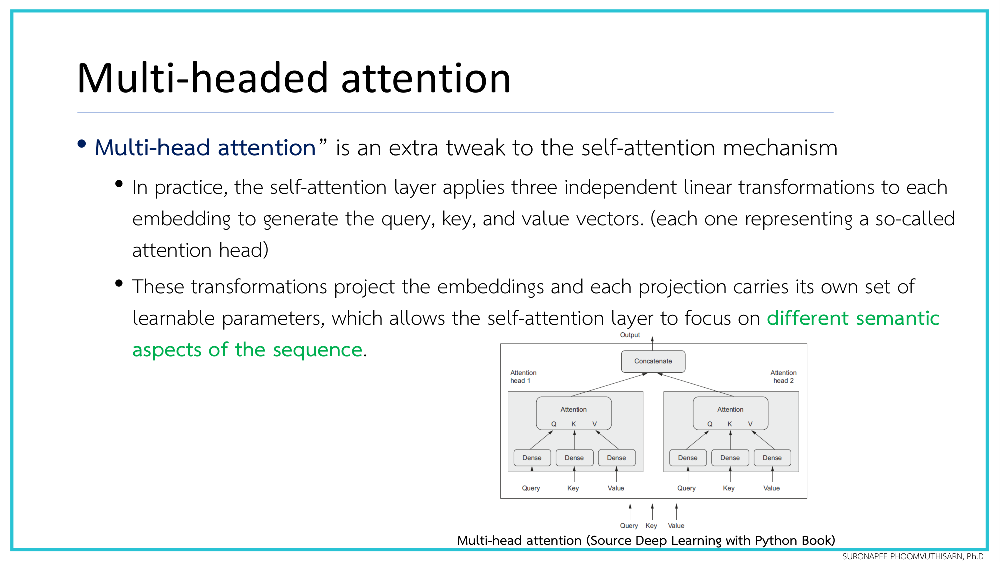
"• Multi-head attention" เป็นการปรับเพิ่มของ self-attention: layer ใช้ linear transformation สามตัว (Dense) สร้าง query, key, value และทำซ้ำหลายชุดอิสระกัน แต่ละชุดคือ attention head หนึ่งตัว. แต่ละ projection มี parameter ของตัวเอง layer จึงโฟกัสได้หลาย different semantic aspects of the sequence (เช่น head หนึ่งดูความสัมพันธ์ประธาน–กริยา อีก head ดูคำที่อยู่ติดกัน). Output ของทุก head ถูก Concatenate.
12 head × 64 มิติ = 768 เท่าขนาด input จึงใช้ parameter เท่ากับ single head ขนาด 768 แต่ได้ 12 มุมมอง. หมายเหตุ: ใน MultiHeadAttention(num_heads=4, key_dim=256) ของ Keras key_dim คือขนาดต่อ head (4 × 256 = 1,024) ไม่ใช่ขนาดรวม.
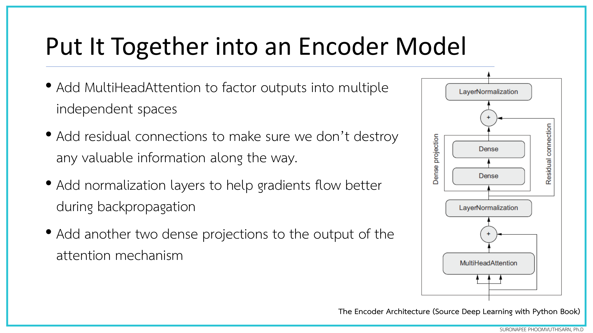
ประกอบเป็น encoder model หนึ่งชั้น:
MultiHeadAttention เพื่อแยก output เป็นหลาย space อิสระใน notebook ของผู้สอน: embed_dim = 256, dense_dim = 2048, num_heads = 8; Dense ชั้นแรกขยายเป็น 2,048 มิติด้วย ReLU และ Dense ชั้นที่สองคืนเป็น 256 เพื่อให้บวก residual ได้. Feed-forward นี้มี parameter \((256 \times 2048 + 2048) + (2048 \times 256 + 256) = 1{,}050{,}880\).
![Slide: The Decoder. Like the RNN decoder, it reads tokens 0...N of the target and predicts token N+1. The decoder has 2 attention sublayers: cross attention layer (identify which tokens of the encoded source are most related to the target token being predicted) and masked (causal) self-attention layer (tokens at each timestep based only on past outputs and the current token; without it the decoder could cheat by copying target translations). Diagrams: cross attention layer, causal self attention layer with triangular attention weights, end-to-end Transformer with TransformerEncoder and TransformerDecoder, target offset by one step](../assets/slides/dl11-p45-the-decoder.png)
เหมือน RNN decoder: decoder อ่าน token 0…N ของประโยคปลายทางแล้วทำนาย token N+1. ความต่างหลักจาก encoder คือ decoder มี attention สองชั้นย่อย:
แถวที่ 2 ("สวัสดี") ทำนาย "คุณ" โดยเห็นเพียง [start] กับ สวัสดี. รูปสามเหลี่ยมนี้คือ "The causal self attention layer" ในสไลด์. ทุกตำแหน่งยังคำนวณพร้อมกันได้ตอนเทรน (parallel) แต่ไม่มีตำแหน่งใดเห็นอนาคต.
ใน end-to-end architecture ของสไลด์: TransformerEncoder (MHA → Add & LayerNorm → Dense → Dense → Add & LayerNorm) รับ Source; TransformerDecoder มี MultiHeadAttention สองตัว: ตัวล่างเป็น causal self-attention บน Target และตัวกลางรับ "Encoded source" เป็น key/value. ป้ายด้านบนเขียนว่า "Target offset by one step" ซึ่งคือการเหลื่อม input/target ของ §3. ในโค้ดของผู้สอน: x = TransformerDecoder(embed_dim, dense_dim, num_heads)(x, encoder_outputs).
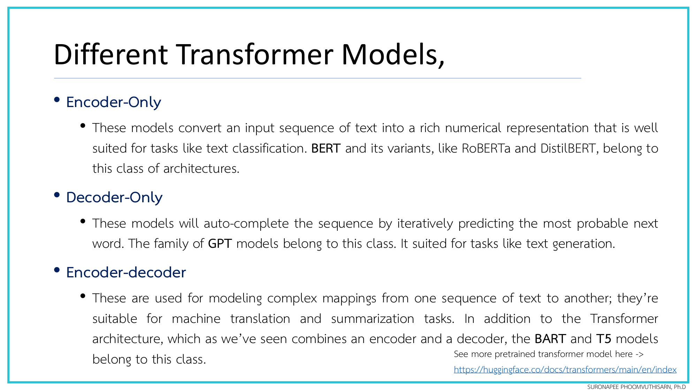
| ชนิด | ทำอะไร (ตามสไลด์) | ตัวอย่างโมเดล | งานที่เหมาะ |
|---|---|---|---|
| • Encoder-Only | แปลงข้อความเป็น representation เชิงตัวเลขที่สมบูรณ์ | BERT, RoBERTa, DistilBERT | text classification |
| • Decoder-Only | เติมลำดับให้สมบูรณ์ด้วยการทำนายคำถัดไปที่น่าจะเป็นที่สุดซ้ำๆ | GPT family | text generation |
| • Encoder-decoder | จำลอง mapping ซับซ้อนจากลำดับข้อความหนึ่งไปอีกลำดับ | Transformer ดั้งเดิม, BART, T5 | machine translation, summarization |
เชื่อมกับบทนี้: language model ของ §1 คือแนวคิดของ decoder-only; โมเดลแปลของ §3–4 คือ encoder-decoder; Lesson 12 ใช้ DistilBERT (encoder-only) จำแนกอารมณ์. Decoder-only ไม่มี encoder จึงไม่มี cross attention เหลือเพียง causal self-attention. ดูโมเดล pretrained เพิ่มเติมได้ที่ Hugging Face Transformers.
| หน้า | เนื้อหา | สถานะ |
|---|---|---|
| 1 | ปก Part4: Different Types of RNN & Transformer | etc — สไลด์ปก (ชื่อหัวข้อ, ภาคเรียน, เวลาเรียน) ไม่มีเนื้อหาวิชา |
| 2 | AGENDA | ✓ หัวข้อ 1 (รูป + สามส่วน) |
| 3 | Text Generation — training time | ✓ หัวข้อ 1 (รูป + คำนวณ input/target) |
| 4 | Inference Time | ✓ หัวข้อ 1 (รูป) |
| 5 | Sampling Strategies — greedy | ✓ หัวข้อ 2 (รูป + คำนวณ 0.20 เทียบ 0.36) |
| 6 | Sampling Strategies (2) — stochastic | ✓ หัวข้อ 2 (รูป) |
| 7 | Softmax Temperature | ✓ หัวข้อ 2 (รูป + โค้ด + คำนวณสี่ค่า T) |
| 8 | Generate Movie Reviews from IMDB Dataset | ✓ หัวข้อ 2 (รูป + โค้ด + คำนวณ 7,848,224) |
| 9 | Results | ✓ หัวข้อ 2 (รูป + ตาราง) |
| 10 | Machine Translation | ✓ หัวข้อ 3 (รูป + conditional LM) |
| 11 | Training Time (during training) | ✓ หัวข้อ 3 (รูป + คำนวณ shift) |
| 12 | Inference Time (after training) | ✓ หัวข้อ 3 (รูป + ตารางเทียบ) |
| 13 | Neural Machine Translation Example — preparing text | ✓ หัวข้อ 4 (รูป + โค้ด) |
| 14 | Neural Machine Translation Example (2) — split | ✓ หัวข้อ 4 (รูป + โค้ด + คำนวณ 83,276) |
| 15 | Neural Machine Translation Example (3) — TextVectorization | ✓ หัวข้อ 4 (รูป + โค้ด) |
| 16 | Encoder-Decoder Models | ✓ หัวข้อ 4 (รูป + โค้ด + คำนวณ 34,869,912) |
| 17 | Note — sampled softmax, padding | ✓ หัวข้อ 5 (รูป) |
| 18 | Machine Translation Evaluation Metrics — BLEU | ✓ หัวข้อ 5 (รูป + คำนวณ BLEU 0.517) |
| 19 | The Problems of Encoder-Decoder Framework | ✓ หัวข้อ 6 (รูป) |
| 20 | Beam Search | ✓ หัวข้อ 6 (รูป + chain rule) |
| 21 | Beam Search (2) | ✓ หัวข้อ 6 (รูป + คำนวณจำนวน candidate) |
| 22 | The Problems of Encoder-Decoder Framework (2) | ✓ หัวข้อ 6 (รูป) |
| 23 | Attention Mechanisms | ✓ หัวข้อ 7 (รูป) |
| 24 | Attention Weights Computation | ✓ หัวข้อ 7 (รูป + คำนวณ context vector) |
| 25 | Visualize the Attention Weights | ✓ หัวข้อ 7 (รูป) |
| 26 | Transformers — timeline | ✓ หัวข้อ 8 (รูป) |
| 27 | Transformer Architecture | ✓ หัวข้อ 8 (รูป) |
| 28 | Compared to Encoder-Decoder RNNs | ✓ หัวข้อ 8 (รูป) |
| 29 | Why Transformer | ✓ หัวข้อ 8 (รูป + ตารางสามข้อดี) |
| 30 | Transformer Components | ✓ หัวข้อ 8 (รูป + ตาราง) |
| 31 | The Embedding & Positional Encoding Layer | ✓ หัวข้อ 9 (รูป) |
| 32 | Positional Embeddings (2) — สูตร | ✓ หัวข้อ 9 (รูป + สูตร) |
| 33 | Positional Embeddings (3) — ตัวอย่าง | ✓ หัวข้อ 9 (รูป + คำนวณ + แก้ตัวเลข) |
| 34 | Positional Embeddings (4) — บวก token embedding | ✓ หัวข้อ 9 (รูป + คำนวณ) |
| 35 | Positional Embeddings (5) — ระยะห่าง | ✓ หัวข้อ 9 (รูป + คำนวณ 0.96/1.68) |
| 36 | Positional Embeddings (6) — โค้ด | ✓ หัวข้อ 9 (รูป + โค้ด) |
| 37 | Positional Embeddings (7) — ข้อดี | ✓ หัวข้อ 9 (รูป) |
| 38 | The Encoder | ✓ หัวข้อ 10 (รูป) |
| 39 | Self-attention | ✓ หัวข้อ 10 (รูป + ตัวอย่าง station) |
| 40 | Self-attention Computation | ✓ หัวข้อ 10 (รูป + pseudocode + คำนวณ) |
| 41 | The Query-Key-Value Model | ✓ หัวข้อ 11 (รูป + ตารางบทบาท) |
| 42 | Generalized Self-attention Computation | ✓ หัวข้อ 11 (รูป + คำนวณ scaled dot-product) |
| 43 | Multi-headed attention | ✓ หัวข้อ 11 (รูป + คำนวณ 768/12) |
| 44 | Put It Together into an Encoder Model | ✓ หัวข้อ 11 (รูป + สูตร block) |
| 45 | The Decoder | ✓ หัวข้อ 12 (รูป + คำนวณ causal mask) |
| 46 | Different Transformer Models | ✓ หัวข้อ 12 (รูป + ตาราง) |
สงสัยตรงไหน ถามได้เลยในแชท — ผมเป็นผู้สอนของคุณ ถามซ้ำได้ ถามลึกได้ ไม่ต้องเกรงใจ.